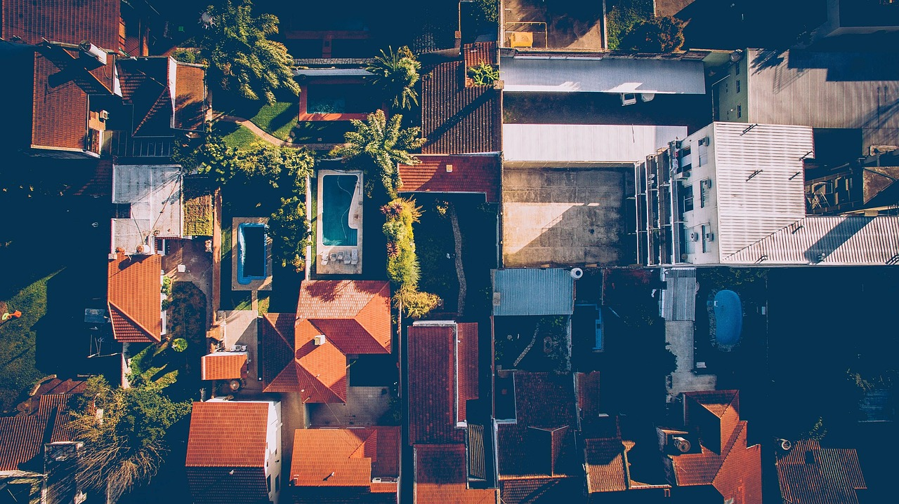
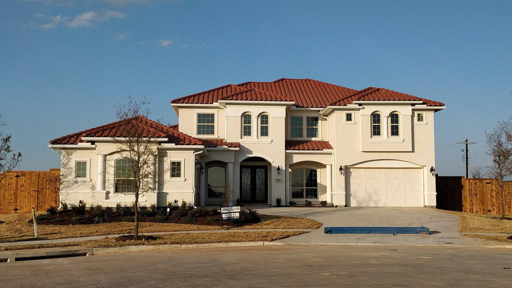

Réparation
Fuites, bardeaux manquants, et ce qu’une tempête laisse derrière.
Toiture · Trois-Rivières, Québec
Roof Top Trois-Rivières fait de la toiture à Trois-Rivières, Québec. Cet aperçu part de la maison elle-même : le toit, le quartier, et une façon simple de demander un regard.
Demander un regard sur le toitFuites, bardeaux manquants, et ce qu’une tempête laisse derrière.
Un regard honnête sur le toit actuel, puis un plan simple.
Une visite attentive avant de décider ce qu’il faut vraiment faire.
Solins, ventilation, et ce qui fait durer un toit.



Roof Top Trois-Rivières est établi autour de Trois-Rivières, Québec. Cet aperçu s'adresse aux gens du secteur. Si vous couvrez déjà plus large, on peut l'ajouter à la page.
282, rue des Forges Trois-Rivières (Québec) G9A 2G8
Téléphone (819) 378-4070
Courriel rooftop3rbar@gmail.com
Adresse 282, rue des Forges Trois-Rivières (Québec) G9A 2G8
Secteur Trois-Rivières, Québec et les alentours